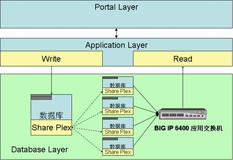
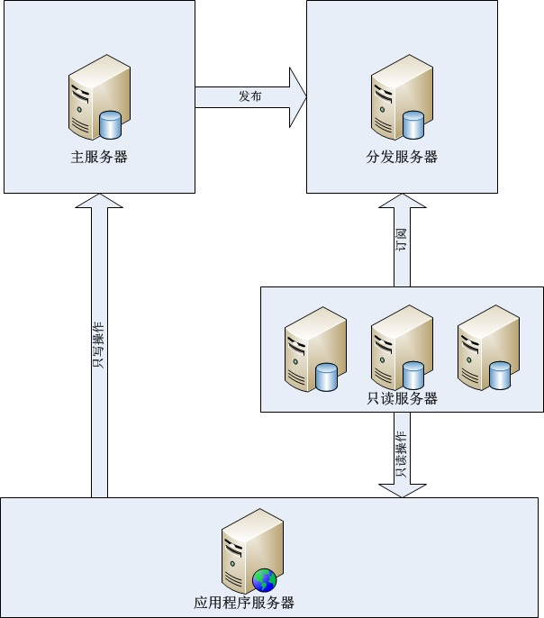
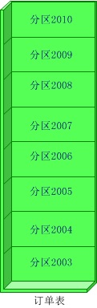

随着互联网应用的广泛普及，海量数据的存储和访问成为了系统设计的瓶颈问题。对于一个大型的互联网应用，每天百万级甚至上亿的PV无疑对数据库造成了相当高的负载。对于系统的稳定性和扩展性造成了极大的问题。
一、负载均衡技术
负载均衡集群是由一组相互独立的计算机系统构成，通过常规网络或专用网络进行连接，由路由器衔接在一起，各节点相互协作、共同负载、均衡压力，对客户端来说，整个群集可以视为一台具有超高性能的独立服务器。
1、实现原理
实现数据库的负载均衡技术，首先要有一个可以控制连接数据库的控制端。在这里，它截断了数据库和程序的直接连接，由所有的程序来访问这个中间层，然后再由中间层来访问数据库。这样，我们就可以具体控制访问某个数据库了，然后还可以根据数据库的当前负载采取有效的均衡策略，来调整每次连接到哪个数据库。
2、实现多据库数据同步
对于负载均衡，最重要的就是所有服务器的数据都是实时同步的。这是一个集群所必需的，因为，如果数不据实时、不同步，那么用户从一台服务器读出的数据，就有别于从另一台服务器读出的数据，这是不能允许的。所以必须实现数据库的数据同步。这样，在查询的时候就可以有多个资源，实现均衡。比较常用的方法是Moebius for SQL Server集群，Moebius for SQL Server集群采用将核心程序驻留在每个机器的数据库中的办法，这个核心程序称为Moebius for SQL Server 中间件，主要作用是监测数据库内数据的变化并将变化的数据同步到其他数据库中。数据同步完成后客户端才会得到响应，同步过程是并发完成的，所以同步到多个数据库和同步到一个数据库的时间基本相等；另外同步的过程是在事务的环境下完成的，保证了多份数据在任何时刻数据的一致性。正因为Moebius 中间件宿主在数据库中的创新，让中间件不但能知道数据的变化，而且知道引起数据变化的SQL语句，根据SQL语句的类型智能的采取不同的数据同步的策略以保证数据同步成本的最小化。

数据条数很少，数据内容也不大，则直接同步数据
数据条数很少，但是里面包含大数据类型，比如文本，二进制数据等，则先对数据进行压缩然后再同步，从而减少网络带宽的占用和传输所用的时间。
数据条数很多，此时中间件会拿到造成数据变化的SQL语句， 然后对SQL语句进行解析，分析其执行计划和执行成本，并选择是同步数据还是同步SQL语句到其他的数据库中。此种情况应用在对表结构进行调整或者批量更改数据的时候非常有用。
3、优缺点
(1) 扩展性强：当系统要更高数据库处理速度时，只要简单地增加数据库服务器就 可以得到扩展。
(2) 可维护性：当某节点发生故障时，系统会自动检测故障并转移故障节点的应用，保证数据库的持续工作。
(3) 安全性：因为数据会同步的多台服务器上，可以实现数据集的冗余，通过多份数据来保证安全性。另外它成功地将数据库放到了内网之中，更好地保护了数据库的安全性。
(4) 易用性：对应用来说完全透明，集群暴露出来的就是一个IP
(1) 不能够按照Web服务器的处理能力分配负载。
(2) 负载均衡器(控制端)故障，会导致整个数据库系统瘫痪。
二、数据库的读写分离
1，实现原理：读写分离简单的说是把对数据库读和写的操作分开对应不同的数据库服务器，这样能有效地减轻数据库压力，也能减轻io压力。主数据库提供写操作，从数据库提供读操作，其实在很多系统中，主要是读的操作。当主数据库进行写操作时，数据要同步到从的数据库，这样才能有效保证数据库完整性。

(ebay的读写比率是260:1,ebay的读写分离)

(微软数据库分发)
2，实现方法：在MS Sql server中可以使用发布定义的方式实现数据库复制，实现读写分离，复制是将一组数据从一个数据源拷贝到多个数据源的技术，是将一份数据发布到多个存储站点上的有效方式。使用复制技术，用户可以将一份数据发布到多台服务器上。复制技术可以确保分布在不同地点的数据自动同步更新，从而保证数据的一致性。SQL SERVER复制技术类型有三种，分别是：快照复制、事务复制、合并复制。SQL SERVER 主要采用出版物、订阅的方式来处理复制。源数据所在的服务器是出版服务器，负责发表数据。出版服务器把要发表的数据的所有改变情况的拷贝复制到分发服务器，分发服务器包含有一个分发数据库，可接收数据的所有改变，并保存这些改变，再把这些改变分发给订阅服务器。
3，优缺点
(1)数据的实时性差:数据不是实时同步到自读服务器上的，当数据写入主服务器后，要在下次同步后才能查询到。
(2)数据量大时同步效率差：单表数据量过大时插入和更新因索引,磁盘IO等问题，性能会变的很差。
(3)同时连接多个（至少两个）数据库：至少要连接到两个数据数据库，实际的读写操作是在程序代码中完成的，容易引起混乱
(4)读具有高性能高可靠性和可伸缩:只读服务器，因为没有写操作，会大大减轻磁盘IO等性能问题，大大提高效率；只读服务器可以采用负载均衡，主数据库发布到多个只读服务器上实现读操作的可伸缩性。
三、数据库拆分(分布式)
通过某种特定的条件，将存放在同一个数据库中的数据分散存放到多个数据库上，实现分布存储，通过路由规则路由访问特定的数据库，这样一来每次访问面对的就不是单台服务器了，而是N台服务器，这样就可以降低单台机器的负载压力。
垂直(纵向)拆分：是指按功能模块拆分，比如分为订单库、商品库、用户库…这种方式多个数据库之间的表结构不同。
水平(横向)拆分：将同一个表的数据进行分块保存到不同的数据库中，这些数据库中的表结构完全相同。

（纵向拆分）

（横向拆分）
1，实现原理：使用垂直拆分，主要要看应用类型是否合适这种拆分方式，如系统可以分为，订单系统，商品管理系统，用户管理系统业务系统比较明的，垂直拆分能很好的起到分散数据库压力的作用。业务模块不明晰，耦合（表关联）度比较高的系统不适合使用这种拆分方式。但是垂直拆分方式并不能彻底解决所有压力问题，例如 有一个5000w的订单表，操作起来订单库的压力仍然很大，如我们需要在这个表中增加（insert）一条新的数据，insert完毕后，数据库会针对这张表重新建立索引，5000w行数据建立索引的系统开销还是不容忽视的，反过来，假如我们将这个表分成100个table呢，从table_001一直到table_100，5000w行数据平均下来，每个子表里边就只有50万行数据，这时候我们向一张只有50w行数据的table中insert数据后建立索引的时间就会呈数量级的下降，极大了提高了DB的运行时效率，提高了DB的并发量，这种拆分就是横向拆分
2，实现方法：垂直拆分，拆分方式实现起来比较简单，根据表名访问不同的数据库就可以了。横向拆分的规则很多，这里总结前人的几点，
(1)顺序拆分：如可以按订单的日前按年份才分，2003年的放在db1中，2004年的db2,以此类推。当然也可以按主键标准拆分。
优点：可部分迁移
缺点：数据分布不均，可能2003年的订单有100W，2008年的有500W。
(2)hash取模分： 对user_id进行hash（或者如果user_id是数值型的话直接使用user_id的值也可），然后用一个特定的数字，比如应用中需要将一个数据库切分成4个数据库的话，我们就用4这个数字对user_id的hash值进行取模运算，也就是user_id%4,这样的话每次运算就有四种可能：结果为1的时候对应DB1；结果为2的时候对应DB2；结果为3的时候对应DB3；结果为0的时候对应DB4，这样一来就非常均匀的将数据分配到4个DB中。
优点：数据分布均匀
缺点：数据迁移的时候麻烦；不能按照机器性能分摊数据 。
(3)在认证库中保存数据库配置
就是建立一个DB，这个DB单独保存user_id到DB的映射关系，每次访问数据库的时候都要先查询一次这个数据库，以得到具体的DB信息，然后才能进行我们需要的查询操作。
优点：灵活性强，一对一关系
缺点：每次查询之前都要多一次查询，会造成一定的性能损失。
来源：http://www.codeceo.com/article/db-solutions.html

点我分享笔记